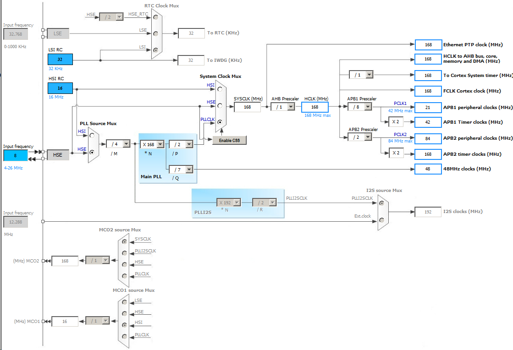
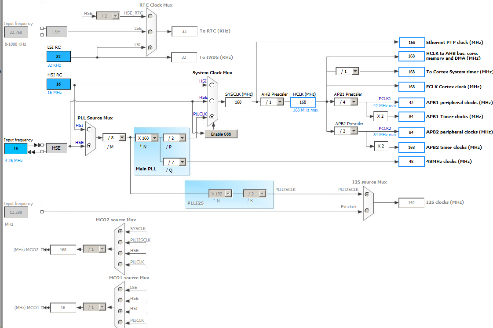
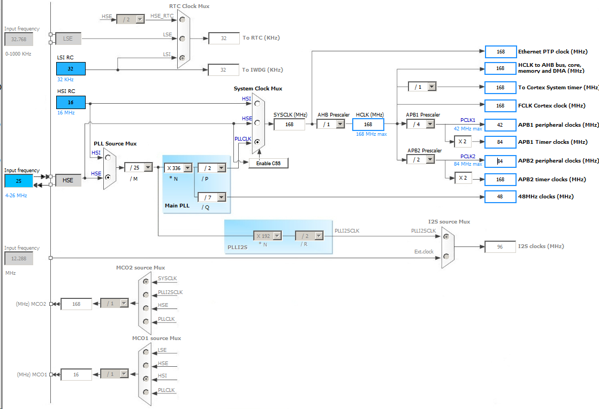
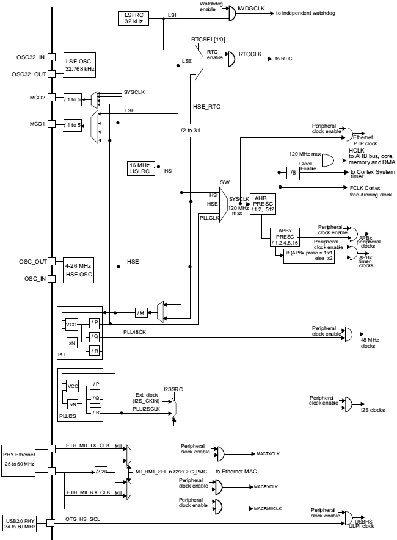

Главный косяк был в том, что я не инициализировал задержку для FLASH. Она не может читаться на слишком высоких тактовых частотах, из-за чего камень постоянно уходил в ребут, сбрасывая конфигурацию HSI/HSE.
Инициализация RCC PLL для STM32F407 (OSC = 8 MHz)
void RCC_init(void)
{
RCC->CR |= (RCC_CR_HSEON); //Enable HSE
while( !(RCC->CR & RCC_CR_HSERDY) ) {}; //ready to start HSE
//FLASH
FLASH->ACR |= FLASH_ACR_LATENCY //cloack flash memory
| FLASH_ACR_PRFTEN
| FLASH_ACR_ICEN
| FLASH_ACR_DCEN;
//PLL - HSE
RCC->PLLCFGR |= RCC_PLLCFGR_PLLSRC_HSE; //set HSE as PLL source
RCC->CR &= ~(RCC_CR_PLLON); //disable PLL before changes
//PLL M
RCC->PLLCFGR &= ~(RCC_PLLCFGR_PLLM); //clear all PLLM bits
RCC->PLLCFGR |= RCC_PLLCFGR_PLLM_2; //set PLLM = 4 (100)
//PLL P
RCC->PLLCFGR &= ~(RCC_PLLCFGR_PLLP); //main PLL division PLLP = 2: 00
//PLL N
RCC->PLLCFGR &= ~(RCC_PLLCFGR_PLLN); //clear all PLLN bits with mask
RCC->PLLCFGR |= RCC_PLLCFGR_PLLN_3; //set PLLN = 168 (1010 1000)
RCC->PLLCFGR |= RCC_PLLCFGR_PLLN_5; //for 8 or 16 MHz HSE
RCC->PLLCFGR |= RCC_PLLCFGR_PLLN_7; //
//PLL Q 7 (0111)
RCC->PLLCFGR &= ~(RCC_PLLCFGR_PLLQ);
RCC->PLLCFGR |= (RCC_PLLCFGR_PLLQ_0
| RCC_PLLCFGR_PLLQ_2
| RCC_PLLCFGR_PLLQ_2);
//AHB Prescaler
RCC->CFGR &= ~(RCC_CFGR_HPRE); //Prescaler 1
RCC->CFGR |= RCC_CFGR_HPRE_DIV1; //AHB = SYSCLK/1
//APB1 Prescaler 8
RCC->CFGR &= ~(RCC_CFGR_PPRE1);
RCC->CFGR |= RCC_CFGR_PPRE1_DIV8;
//APB2 Prescaler 2
RCC->CFGR &= ~(RCC_CFGR_PPRE2);
RCC->CFGR |= RCC_CFGR_PPRE2_DIV2;
//PLL enable
RCC->CR |= RCC_CR_PLLON; //enalbe PLL
while((RCC->CR & RCC_CR_PLLRDY) == 0) {} //wait for PLL is ready
//PLL System
//RCC->CFGR &= ~RCC_CFGR_SW;
RCC->CFGR |= RCC_CFGR_SW_PLL; //PLL selected as system clock
while((RCC->CFGR & RCC_CFGR_SWS) != RCC_CFGR_SWS_PLL) {} //wait for PLL is used
}
Новая версия для частот 8/10/25 МГц кварцевого резонатора:
enum OSCIL_FREQ //External clock source frequency
{
FREQ8 = 8,
FREQ10 = 10,
FREQ25 = 25
};
void initMCU(void)
{
static const enum OSCIL_FREQ oscFreq = FREQ8;
initRCC(oscFreq);
...
}
void initRCC(const enum OSCIL_FREQ oscFreq)
{
RCC->CR |= (RCC_CR_HSEON); //Enable HSE
while( !(RCC->CR & RCC_CR_HSERDY) ) {}; //ready to start HSE
//FLASH
FLASH->ACR |= (FLASH_ACR_LATENCY_5WS //latency for flash memory
| FLASH_ACR_PRFTEN
| FLASH_ACR_ICEN
| FLASH_ACR_DCEN);
//PLL - HSE
RCC->CR &= ~(RCC_CR_PLLON); //disable PLL before changes
RCC->PLLCFGR |= RCC_PLLCFGR_PLLSRC_HSE; //set HSE as PLL source
//reseting PLL M, P
RCC->PLLCFGR &= ~(RCC_PLLCFGR_PLLM); //clear all PLLM bits
RCC->PLLCFGR &= ~(RCC_PLLCFGR_PLLN); //clear all PLLN bits
//if oscFreq == FREQ8 (as default):
uint8_t mPLLM = 4;
uint16_t mPLLN = 168;
if(oscFreq == FREQ10)
{
mPLLM = 5;
//mPLLN = 168;
}
else if(oscFreq == FREQ25)
{
mPLLM = 25;
mPLLN = 336;
}
RCC->PLLCFGR |= mPLLM << RCC_PLLCFGR_PLLM_Pos;
RCC->PLLCFGR |= mPLLN << RCC_PLLCFGR_PLLN_Pos;
//PLL P (2 == 00, 4 == 01, 6 == 10, 8 == 11)
RCC->PLLCFGR &= ~(RCC_PLLCFGR_PLLP); //clear all PLLP bits
//RCC->PLLCFGR |= (RCC_PLLCFGR_PLLP_1); //
//PLL Q (4 == 100)
RCC->PLLCFGR &= ~(RCC_PLLCFGR_PLLQ); //clear all PLLQ bits
RCC->PLLCFGR |= (RCC_PLLCFGR_PLLQ_2);
//AHB Prescaler
RCC->CFGR &= ~(RCC_CFGR_HPRE); //reseting prescaler (=1)
RCC->CFGR |= RCC_CFGR_HPRE_DIV1; //AHB = SYSCLK/1
//APB1 Prescaler
RCC->CFGR &= ~(RCC_CFGR_PPRE1); //reseting prescaler (=1)
RCC->CFGR |= RCC_CFGR_PPRE1_DIV4; //Prescaler = 4
//APB2 Prescaler
RCC->CFGR &= ~(RCC_CFGR_PPRE2); //reseting prescaler (=1)
RCC->CFGR |= RCC_CFGR_PPRE2_DIV2; //Prescaler = 2
//PLL enable
RCC->CR |= RCC_CR_PLLON; //enalbe PLL
while((RCC->CR & RCC_CR_PLLRDY) == 0) {} //wait for PLL is ready
//PLL System
RCC->CFGR &= ~RCC_CFGR_SW;
RCC->CFGR |= RCC_CFGR_SW_PLL; //PLL selected as system clock
while((RCC->CFGR & RCC_CFGR_SWS) != RCC_CFGR_SWS_PLL) {} //wait for PLL is used
}
Размерность делителей/умножителей лучше всего смотреть в CubeMX:

Версия для кварца на 16 МГц:

Для 25 МГц:

Здесь приведен перевод аптноута AN3988 "Clock configuration tool for STM32F40xx/41xx/427x/437x microcontrollers" компании ST.
Для STM32F4xx поддерживается следующая функциональность:
• Конфигурирование системной частоты (system clock), источника тактов HCLK и выходная частота.
• Конфигурирование быстродействия FLASH (latency), т. е. количество тактов ожидания (wait states) в зависимости от частоты HCLK.
• Установка частот PCLK1, PCLK2, TIMCLK (частоты таймера), USBCLK и I2SCLK.
• Генерирование готового к использованию модуля кода system_stm32f4xx.c, который содержит в себе все вышеперечисленные установки (системный исходный файл слоя доступа к периферии, STM32F4xx CMSIS Cortex-M4 Device Peripheral Access Layer).
Схема тактирования микроконтроллеров STM32F4xx
В этой секции описывается схема системной частоты, которая зависит от требований к напряжению питания (VDD) против значения системной тактовой частоты и латентности Flash против значения системной тактовой частоты. Можно использовать три разные источника тактовой частоты, чтобы получить системные такты (SYSCLK):
1. Такты генератора HSI (16 МГц).
2. Такты генератора HSE (4..26 МГц).
3. Основная петля ФАПЧ (phase-locked loop, PLL) для получения тактов, с генератором, управляемым напряжением в петле PLL (PLLVCO). Входная частота системы PLL должна быть между 1 и 2 МГц (рекомендуется использовать 2 МГц, чтобы ограничить джиттер PLL). В PLL участвуют коэффициенты умножения и деления M, N, P и Q.
Все тактовые частоты для периферийных устройств микроконтроллера производятся от частоты SYSCLK, за исключением:
1. Тактовые частоты USB OTG FS clock (48 МГц), RNG (48 МГц) и SDIO (48 МГц), которая приходит от специального выхода PLL (PLL48CLK).
2. Тактовая частота I2S. Чтобы достичь высокого качества звука, такты I2S могут быть получены либо от отдельного узла PLL (PLLI2S), либо от внешней тактовой частоты, которая подключена к ножке I2S_CKIN.

Рис. 1. Схема тактирования STM32F4xx.
Ethernet PTP clock тактовая частота Precision time protocol для Ethernet.
HSE_RTC тактовая частота RTC (HSE, поделенная на коэффициент программируемого делителя).
independent watchdog независимый сторожевой таймер.
LSE OSC Low Speed External, внешний низкоскоростной RC-генератор 32.768 кГц (к которому подключается отдельный низкочастотный кварцевый резонатор).
LSI RC Low Speed Internal, внутренний низкоскоростной RC-генератор 32 кГц.
MCO1, MCO2 Microcontroller clock output, выходы тактов 1 и 2.
OSC_OUT, OSC_IN выводы для подключения высокочастотного кварцевого резонатора (4..26 МГц).
Watchdog enable разрешение сторожевого таймера.